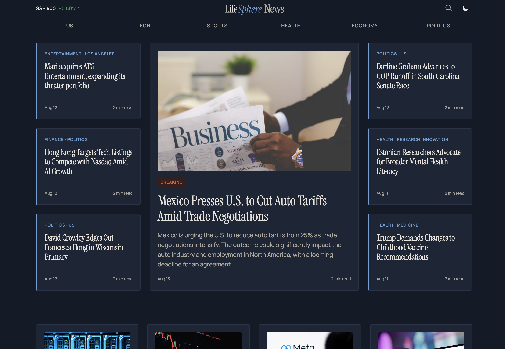
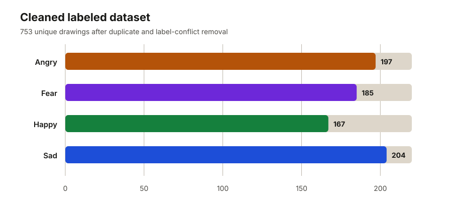
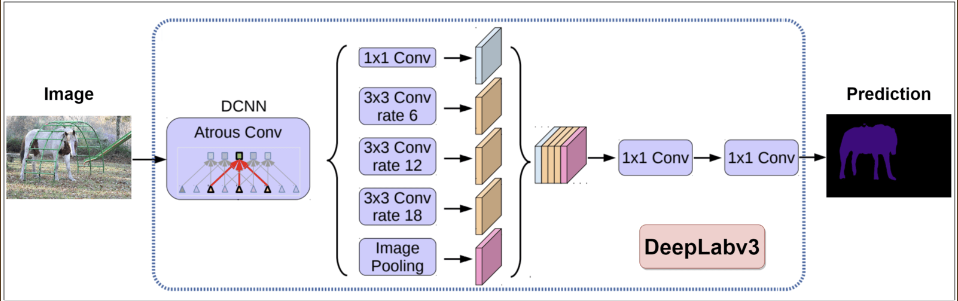
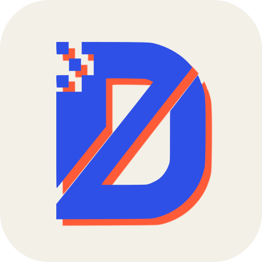

Los Angeles Area · Available for opportunities
I build machine-learning systems.
I’m Farhan, a software engineer working across LLM pipelines, backend infrastructure, and machine learning. I turn ambitious ideas into dependable, user-focused products.
- LLM systems
- Backend engineering
- Machine learning
- Full-Stack Development
About
Engineering with rigor and empathy.
I’m a software engineer with a computer science background in machine learning and intelligent systems. I enjoy work that spans the stack: understanding the user, shaping the system, and getting the details right.
I’m most interested in applied AI, dependable infrastructure, and digital products that feel straightforward to use.
Working toolkit
Python · C/C++ · TypeScript · JavaScript · React · Next.js · REST APIs · PyTorch · AWS · Docker · MongoDB
Selected work
Built for real-world complexity.
Production infrastructure, applied AI, and research systems designed around measurable outcomes.

LifeSphere News
An end-to-end LLM news platform built to create, validate, organize, and deliver trustworthy articles at scale.
- Built the generation pipeline and backend API on AWS EC2
- Added source verification, duplicate detection, and quality monitoring
- Migrated hosting from Vercel to AWS CloudFront for greater control

Reading Emotion in Children’s Drawings
Compared ResNet-50 and Vision Transformer models for four-class emotion recognition, using semi-supervised learning to improve accuracy.

Mapping Energy-Scarce Settlements
Used satellite imagery and semantic segmentation to identify unelectrified settlements across Northern Africa and support NGO planning.
View repositoryExperience
From models to products.
Full-Stack Developer
LifeSphere News
Jun 2025—Present · Los Angeles, CA
- Built an LLM-driven news pipeline spanning article creation, validation, storage, and delivery.
- Implemented quality controls for source verification, sensitive-topic handling, and duplicate detection.
- Developed scalable backend APIs and internal evaluation tooling for production monitoring.

Software Engineer Intern
Mondego Group, UC Irvine
Jun—Sep 2024 · Irvine, CA
- Expanded and optimized UI components for a platform providing specialized AI assistants.
- Architected login systems with database integration, REST endpoints, and OAuth authentication.
- Built and deployed test and immigration law AI assistants and a retrieval-augmented generation framework.
Grader & Course Assistant
Donald Bren School of ICS

Jan—Jun 2024 · Irvine, CA
- Designed Python-based grading infrastructure supporting more than 120 students.
- Built scripts to evaluate student code against tests, edge conditions, and correctness criteria.
- Automated spreadsheet aggregation and debugged submissions at scale to improve grading consistency.

Currently building
Delvian Studio
An independent software studio focused on custom applications and practical digital compliance solutions.
I’m developing the studio’s first service offerings and looking for thoughtful early partnerships where dependable software can make a meaningful difference.
Focus areas
- 01Custom software
- 02AI-enabled products
- 03Digital compliance
Contact
Have an ambitious problem?
I’m open to software engineering opportunities and select early-stage client projects.
contact.farhanzam@gmail.com